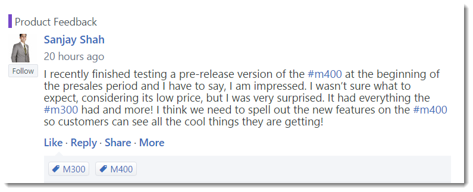

Karen wants to begin her research on the Contoso intranet, so she clicks on Yammer from the Office 365 App Switcher.
She is looking for candid feedback regarding the M400 from employees across the organization, so she clicks on the Product Feedback group in the left pane.
Karen finds a post by Sanjay Shah about the M400 phone.
Competitive Advantage:
Yammer is easier to use and more intuitive than competitor products like Jive or IBM Connections. Both Jive and IBM experience adoption issues due to complexity for the user. Both have long deployment and configuration cycles unlike Yammer which offers speed to value.
Competitive Advantage:
Yammer is set up to engage the entire organization unlike Salesforce.com’s Chatter which was built as an extension to CRM and offers poor usability for non-CRM users (i.e., Generates a lot of system alerts, focused on CRM processes). To invite external guests to collaborate, you have to invite them into your home network unlike the Yammer model of segregated External networks. Multiple instances of SFDC/Chatter don’t talk to each other, deepening silos instead of breaking down collaboration barriers.
Competitive Advantage:
Unlike Google+, Yammer was built for the enterprise. Circles are confusing for users and don’t allow for consistent communication often resulting in posts targeting an unintended audience. Google+ lacks granular control only allowing for external sharing to be turned on or off; if it is turned off, then mobile content is restricted. It is not covered by Google Apps for Work Terms of Service, including SLAs.
She sees that he suggests Contoso change the M400's messaging to better resonate with customers by spelling out the new features more clearly.

She clicks Like on the post to recognize Sanjay's suggestion.
Below this post, Karen sees a reply from Christa Geller that customers may have the perception that the lower price means the M400 is an inferior product, even though it is a better product than the M300.
Karen wants to follow any additional comments Contoso employees make on this post, so she clicks on the ellipsis and chooses Follow in Inbox.
Karen then clicks on the All Company group in left navigation so she can create a post asking other employees to let her know what they are hearing or experiencing regarding the M400. She tags Sanjay to recognize his thoughtful post in the discussion board. She wants to make sure the post can be easily found in the future, so she adds the M400 hashtag by clicking on Add topics and selecting M400.
Karen clicks Post knowing that all company employees will see her request for information, helping her crowdsource more insight into potential marketing or supply problems.
Next, Karen wonders where she can learn about what is being said about the M400 on external social networks, so she clicks on Delve in the Office 365 App Switcher to browse related documents located on SharePoint and shared on OneDrive.
Karen wants to learn more about Contoso's reputation on social media, so she types social in the search field.
Karen finds white papers and PowerPoint presentations on social media trends and strategies that were authored by Kelly Krout.
Karen clicks on Kelly’s name to view her Delve profile and learn more about the work she's done.
Karen can see that Kelly would be a great expert to include in the investigation of the M400 presales issue.
Karen reaches out to Kelly by clicking on the Message icon in Kelly's profile and asks her where she can learn about social media sentiment for Contoso products.
Competitive Advantage:
Skype for Business offers the seamless ability to escalate from IM to voice to multiparty video chat, making it a communication and collaboration tool adaptable to meet your needs.
Karen types:
Hi Kelly! Where can I find information on social media sentiment for our products?
Kelly tells Karen that Contoso compiles tweet sentiment reports in Power BI Pro. Kelly offers to help Karen with her research and walk her through the reports.
Kelly also suggests they include a few members of Contoso's BI Strategy planning group because she thinks they will be able to add insight to other reports in the BI section.
Karen sees on Skype for Business that VP of Corporate Marketing Alan Steiner, VP of Sales Operations Julian Isla and Director of Sales Analysis Molly Clark are online. She drags each of the participants into her meeting with Kelly and escalates the meeting to a video/audio call by clicking the camera icon so they can have a verbal conversation and see who is speaking.
Facilitation Tip:
Drag in all participants in the room so everyone can participate. Instruct the participants to accept the call.
Facilitation Tip:
Only five video feeds will display at one time in Skype for Business. The most active participants are enlarged to help listeners focus on who is speaking. Less active participants and those beyond the five allowed video feeds will display their personas picture as the default.
With her colleagues ready to help, Karen fills the team in on what she’s learned thus far regarding the M400 and what she’d like to learn about the M400 and its presale performance.